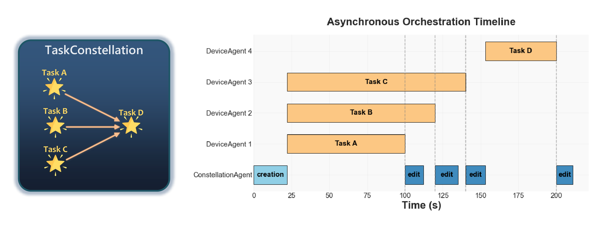

Asynchronous Scheduling
Overview
At the core of the Constellation Orchestrator lies a fully asynchronous scheduling loop that maximizes parallelism across heterogeneous devices. Unlike traditional schedulers that alternate between discrete planning and execution phases, the orchestrator continuously monitors the evolving DAG to identify ready tasks and dispatches them concurrently.
Most critically, task execution and constellation editing can proceed concurrently, allowing the system to adapt in real-time as results stream in while computation continues uninterrupted.
For more on the DAG structure being scheduled, see the TaskConstellation documentation.

Illustration of asynchronous scheduling and concurrent constellation editing. Task execution overlaps with DAG modifications, reducing end-to-end latency.
Core Scheduling Loop
The orchestration workflow is driven by a continuous asynchronous loop that coordinates task execution, constellation synchronization, and event handling:
async def _run_execution_loop(self, constellation: TaskConstellation) -> None:
"""Main execution loop for processing constellation tasks."""
while not constellation.is_complete():
# 1. Wait for pending modifications and refresh constellation
constellation = await self._sync_constellation_modifications(constellation)
# 2. Validate device assignments
self._validate_existing_device_assignments(constellation)
# 3. Get ready tasks and schedule them
ready_tasks = constellation.get_ready_tasks()
await self._schedule_ready_tasks(ready_tasks, constellation)
# 4. Wait for task completion
await self._wait_for_task_completion()
# Wait for all remaining tasks
await self._wait_for_all_tasks()
This loop embodies several key design principles:
1. Continuous Monitoring
The loop runs continuously until all tasks reach terminal states (COMPLETED, FAILED, or CANCELLED). Each iteration:
- Checks for constellation modifications from the agent
- Identifies newly ready tasks (dependencies satisfied)
- Dispatches tasks to devices
- Waits for at least one task to complete before repeating
2. Non-Blocking Execution
All operations use async/await to avoid blocking:
# Schedule tasks without waiting for completion
await self._schedule_ready_tasks(ready_tasks, constellation)
# Wait for ANY task to complete (not all)
await self._wait_for_task_completion()
This enables maximum concurrency - new tasks can be scheduled while others are still executing.
3. Dynamic Adaptation
The constellation can be modified during execution:
# Synchronization point: merge agent's edits with runtime progress
constellation = await self._sync_constellation_modifications(constellation)
After synchronization, the orchestrator immediately identifies and schedules newly ready tasks based on the updated DAG structure.
The orchestrator treats the TaskConstellation as a living data structure that evolves during execution, not a static plan fixed at the start.
Task Scheduling Mechanism
Ready Task Identification
Tasks become "ready" when all their dependencies are satisfied:
ready_tasks = constellation.get_ready_tasks()
The TaskConstellation determines readiness by checking:
- Status: Task must be in
PENDINGstate - Dependencies: All prerequisite tasks must be completed
- Conditions: Any conditional dependencies must evaluate to
True
Implementation in TaskConstellation:
def get_ready_tasks(self) -> List[TaskStar]:
"""Get all tasks ready to execute."""
ready_tasks = []
for task in self._tasks.values():
if task.is_ready_to_execute:
# Double-check dependencies satisfied
if self._are_dependencies_satisfied(task.task_id):
ready_tasks.append(task)
# Sort by priority (higher first)
ready_tasks.sort(key=lambda t: t.priority.value, reverse=True)
return ready_tasks
Priority Scheduling
Ready tasks are sorted by priority before dispatching, ensuring critical tasks execute first when multiple tasks are ready simultaneously.
Asynchronous Task Dispatch
Once ready tasks are identified, they're dispatched concurrently:
async def _schedule_ready_tasks(
self, ready_tasks: List[TaskStar], constellation: TaskConstellation
) -> None:
"""Schedule ready tasks for execution."""
for task in ready_tasks:
if task.task_id not in self._execution_tasks:
# Create async task (non-blocking)
task_future = asyncio.create_task(
self._execute_task_with_events(task, constellation)
)
self._execution_tasks[task.task_id] = task_future
Key aspects:
- Non-blocking dispatch:
asyncio.create_task()schedules the task without waiting - Deduplication: Only schedule if not already in
_execution_tasksdict - Tracking: Store task futures for later completion detection
Task Execution Lifecycle
Each task executes within its own coroutine that encapsulates the full lifecycle:
Execution implementation:
async def _execute_task_with_events(
self, task: TaskStar, constellation: TaskConstellation
) -> None:
"""Execute a single task and publish events."""
try:
# Publish TASK_STARTED event
start_event = TaskEvent(
event_type=EventType.TASK_STARTED,
source_id=f"orchestrator_{id(self)}",
timestamp=time.time(),
data={"constellation_id": constellation.constellation_id},
task_id=task.task_id,
status=TaskStatus.RUNNING.value,
)
await self._event_bus.publish_event(start_event)
# Mark task as started
task.start_execution()
# Execute on device
result = await task.execute(self._device_manager)
is_success = result.status == TaskStatus.COMPLETED.value
# Mark task as completed in constellation
newly_ready = constellation.mark_task_completed(
task.task_id, success=is_success, result=result
)
# Publish TASK_COMPLETED or TASK_FAILED event
completed_event = TaskEvent(
event_type=(
EventType.TASK_COMPLETED if is_success
else EventType.TASK_FAILED
),
source_id=f"orchestrator_{id(self)}",
timestamp=time.time(),
data={
"constellation_id": constellation.constellation_id,
"newly_ready_tasks": [t.task_id for t in newly_ready],
"constellation": constellation,
},
task_id=task.task_id,
status=result.status,
result=result,
)
await self._event_bus.publish_event(completed_event)
except Exception as e:
# Handle failure (mark task failed, publish event)
newly_ready = constellation.mark_task_completed(
task.task_id, success=False, error=e
)
failed_event = TaskEvent(
event_type=EventType.TASK_FAILED,
source_id=f"orchestrator_{id(self)}",
timestamp=time.time(),
data={
"constellation_id": constellation.constellation_id,
"newly_ready_tasks": [t.task_id for t in newly_ready],
},
task_id=task.task_id,
status=TaskStatus.FAILED.value,
error=e,
)
await self._event_bus.publish_event(failed_event)
raise
Concurrent Execution Model
Parallel Task Execution
Multiple tasks execute concurrently across devices:
# Track active execution tasks
self._execution_tasks: Dict[str, asyncio.Task] = {}
# Schedule multiple ready tasks at once
for task in ready_tasks:
task_future = asyncio.create_task(
self._execute_task_with_events(task, constellation)
)
self._execution_tasks[task.task_id] = task_future
Concurrency characteristics:
| Aspect | Behavior | Benefit |
|---|---|---|
| Device parallelism | Independent devices execute tasks simultaneously | Maximize resource utilization |
| Dependency-based | Only independent tasks (no dependency path) run concurrently | Maintain correctness |
| Heterogeneous | Different device types (Windows, Android, iOS, etc.) in parallel | Cross-platform orchestration |
| Unbounded | No artificial limit on concurrent tasks | Scale with available devices |
Completion Detection
The orchestrator waits for at least one task to complete before continuing:
async def _wait_for_task_completion(self) -> None:
"""Wait for at least one task to complete and clean up."""
if self._execution_tasks:
# Wait for first completion
done, _ = await asyncio.wait(
self._execution_tasks.values(),
return_when=asyncio.FIRST_COMPLETED
)
# Clean up completed tasks
await self._cleanup_completed_tasks(done)
else:
# No running tasks, wait briefly
await asyncio.sleep(0.1)
Why wait for first completion?
- Responsiveness: React immediately to any task completion
- Event publishing: Trigger constellation modifications as soon as possible
- Resource efficiency: Avoid busy-waiting when no tasks are running
- Fairness: Give equal opportunity for any task to trigger next iteration
Task Cleanup
Completed tasks are removed from tracking:
async def _cleanup_completed_tasks(self, done_futures: set) -> None:
"""Clean up completed task futures from tracking."""
completed_task_ids = []
for task_future in done_futures:
for task_id, future in self._execution_tasks.items():
if future == task_future:
completed_task_ids.append(task_id)
break
for task_id in completed_task_ids:
del self._execution_tasks[task_id]
This prevents memory leaks and ensures _execution_tasks reflects only actively running tasks.
Concurrent Constellation Editing
The Challenge
Traditional schedulers treat DAG structure as immutable during execution. But in UFO, the LLM-based Constellation Agent can modify the DAG based on task results:
- Add new tasks when decomposition is needed
- Remove unnecessary tasks when shortcuts are found
- Modify dependencies when task relationships change
- Update task descriptions or parameters
This creates a race condition: tasks may be executing while the agent modifies the constellation.
The Solution: Overlapping Execution and Editing
The orchestrator allows task execution and constellation editing to proceed concurrently:
In the diagram:
- Task A completes at t=100, triggering an edit
- Task B continues executing during the edit (100-130)
- Edit completes and syncs at t=135
- Task C starts at t=135 based on updated constellation
- Task B completes at t=150, triggering another edit
- Task C continues executing during this second edit
By overlapping execution and editing, end-to-end latency is reduced by up to 30% compared to sequential edit-then-execute approaches.
Synchronization Points
The orchestrator synchronizes constellation state at the start of each scheduling iteration:
async def _sync_constellation_modifications(
self, constellation: TaskConstellation
) -> TaskConstellation:
"""Synchronize pending constellation modifications."""
if self._modification_synchronizer:
# Wait for agent to finish any pending edits
await self._modification_synchronizer.wait_for_pending_modifications()
# Merge agent's structural changes with orchestrator's execution state
constellation = self._modification_synchronizer \
.merge_and_sync_constellation_states(
orchestrator_constellation=constellation,
)
return constellation
What gets synchronized:
- Structural changes from agent (new tasks, dependencies, modifications)
- Execution state from orchestrator (task statuses, results, errors)
- Consistency validation (check invariants I1-I3)
The merge_and_sync_constellation_states method ensures:
- Agent's constellation has latest structural modifications
- Orchestrator's execution progress is preserved
- More advanced task states (e.g., COMPLETED) take precedence over stale states (e.g., RUNNING)
Learn more about synchronization →
Performance Optimizations
1. Lazy Evaluation
Ready tasks are computed only when needed:
# Only compute when scheduling
ready_tasks = constellation.get_ready_tasks()
Avoids repeated expensive graph traversals when no tasks complete.
2. Priority-Based Scheduling
Higher priority tasks execute first:
# Sort by priority before dispatching
ready_tasks.sort(key=lambda t: t.priority.value, reverse=True)
Ensures critical-path tasks don't wait behind low-priority tasks.
3. Incremental Completion Detection
Use asyncio.wait(..., return_when=FIRST_COMPLETED) instead of waiting for all:
done, pending = await asyncio.wait(
self._execution_tasks.values(),
return_when=asyncio.FIRST_COMPLETED
)
Minimizes latency between task completion and next scheduling iteration.
4. Batched Synchronization
Modifications are batched during agent editing:
# Agent may modify multiple tasks before publishing CONSTELLATION_MODIFIED
# Orchestrator waits once for all modifications
await self._modification_synchronizer.wait_for_pending_modifications()
Reduces synchronization overhead from O(N) to O(1) per editing cycle.
Execution Timeline Example
Here's a concrete example showing how asynchronous scheduling works:
Key observations:
- Iteration 1: Tasks A and B scheduled concurrently
- Concurrent editing: Agent modifies constellation while Task B executes
- Iteration 2: Task C scheduled immediately after sync, Task B still running
- No blocking: Orchestrator never waits idle; always scheduling or executing
Error Handling
Task Failure
When a task fails, the orchestrator:
- Publishes
TASK_FAILEDevent - Marks task as failed in constellation
- Identifies newly ready tasks (if any dependencies allow failure)
- Continues scheduling remaining tasks
except Exception as e:
newly_ready = constellation.mark_task_completed(
task.task_id, success=False, error=e
)
failed_event = TaskEvent(
event_type=EventType.TASK_FAILED,
...
error=e,
)
await self._event_bus.publish_event(failed_event)
Cancellation
If orchestration is cancelled:
except asyncio.CancelledError:
if self._logger:
self._logger.info(
f"Orchestration cancelled for constellation {constellation.constellation_id}"
)
raise
All running tasks are automatically cancelled via asyncio cancellation propagation.
Cleanup
Cleanup always happens, even on error:
finally:
await self._cleanup_constellation(constellation)
Usage Patterns
Basic Orchestration
orchestrator = TaskConstellationOrchestrator(device_manager)
results = await orchestrator.orchestrate_constellation(
constellation=my_constellation,
assignment_strategy="round_robin"
)
With Custom Event Handlers
class ProgressTracker(IEventObserver):
async def on_event(self, event: Event):
if event.event_type == EventType.TASK_COMPLETED:
print(f"✓ Task {event.task_id} completed")
event_bus.subscribe(ProgressTracker())
results = await orchestrator.orchestrate_constellation(constellation)
With Modification Synchronizer
synchronizer = ConstellationModificationSynchronizer(orchestrator)
orchestrator.set_modification_synchronizer(synchronizer)
event_bus.subscribe(synchronizer)
# Now edits are synchronized automatically
results = await orchestrator.orchestrate_constellation(constellation)
Performance Characteristics
| Metric | Typical Value | Notes |
|---|---|---|
| Scheduling latency | < 10ms | Time from task ready to dispatch |
| Completion detection | < 5ms | Time from task done to next iteration |
| Sync overhead | 10-50ms | Per constellation modification |
| Max concurrent tasks | Limited by devices | No artificial orchestrator limit |
| Throughput | 10-100 tasks/sec | Depends on task duration |
Performance measured on: Intel i7, 16GB RAM, 5 connected devices, tasks averaging 2-5 seconds each
Related Documentation
- Event-Driven Coordination - Event system enabling async scheduling
- Safe Assignment Locking - How editing synchronizes with execution
- Consistency Guarantees - Invariants preserved during async execution
- API Reference - Orchestrator API details
Next Steps
To understand how concurrent editing is made safe, continue to Safe Assignment Locking.